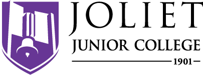
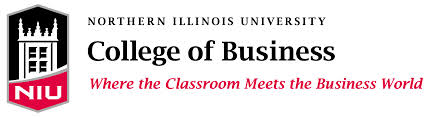
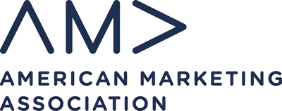

I started at Joliet Junior College in the Spring Semester in 2014. I needed to take a few prerequisites as well as a few classes to enter the NIU College of Business. In total I took 12 classes at JJC and received 9 A's and 3 B's. This helped me attain an NIU Transfer Scholorship.
I began at NIU in the fall of 2015. I took the dreaded UBUS 310 9 credit hour lecture course. I worked hard and recieved a B+ missing an A- by .1 percentage points. I have maintained a GPA above 3.5 in my time at NIU. This accomplishment granted me an invatation into the NIU Marketing Honors Society. I also received the Michael T. McSweeney Endowed Direct Marketing Award as well as the Target American Marketing Society Award.
In my time at NIU I have been an active member of the NIU chapter of the American Marketing Association. In my second semester I became a Director of Fundraising and helped raise over $1500 for the organization. I was elected president for the 2016-17 school year. It has been a really tough year for the AMA. The chapter had been in decline because of mismanagment and a lack of organization. I spent a large part of this year restructuring the group so they will be successful moving forward. It hurts a little knowing I will not enjoy in their future success but I can say I am big reason why they are successful. Click the AMA logo for our chapter webpage